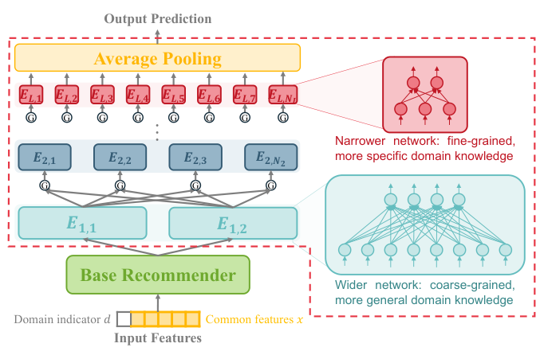

One for Dozens: Adaptive REcommendation for All Domains with Counterfactual Augmentation (一模型服务数十域：反事实增强的自适应全域推荐)
- 会议/期刊: AAAI 2025
- 作者与机构: Huishi Luo, Yiwen Chen, Yiqing Wu, Fuzhen Zhuang, Deqing Wang（北航人工智能学院、中科院计算所、北航 SKLSDE）
- 推荐链路定位: 精排（多域统一 CTR 预估）
- 研究方向: 跨域与多场景推荐 / CTR 预估与特征交叉
- 论文原文: https://arxiv.org/abs/2412.11905v2
- 开源代码: https://github.com/Chrissie-Law/AREAD-Multi-Domain-Recommendation
TL;DR (1分钟核心速览)
真实平台常需同时服务数十乃至上百个域，而传统 MDR 只处理 <5 个域：逐域建塔参数爆炸、共享/专属二元划分无法刻画方向性知识迁移、少数域样本不足被多数域淹没。AREAD 用「分层专家集成（HEI）+ 彩票假设驱动的分层专家掩码剪枝（HEMP）+ 流行度反事实增强」为每域自动学出专属专家子网。在 Amazon（25 域）与 AliCCP（30 域）上，总 AUC 分别提升 6.7‰ / 3‰，DomainAUC 提升 2‰ / 8.4‰，Minor10AUC 提升 3‰ / 5‰（\(p<0.01\)）。
Background & Motivation (背景与核心矛盾)
- 主流范式: MDR 沿用多任务学习思路，共享底层 + 每域独立 Tower（MMoE/PLE/STAR/HiNet），或「预训练+逐域微调」（MAMDR），或先聚类再域内共享（ADL）。
- 前人局限: ① 域数增至数十时，逐域 Tower 参数量线性膨胀且小域塔欠收敛；② 共享/专属二元划分忽略了知识迁移的方向性——A 域有益的知识在 B 域可能有害，聚类又会抹平簇内差异。
- 核心洞察 (Key Insight): 图 1 显示 Amazon 25 个域中 12 个少数域样本占比不足 2%，优化被多数域主导；而「用户对冷门物品的正反馈更可能源于真实兴趣而非从众」（对撞偏置 explain-away 效应），故冷门交互可跨域迁移。
- 本文切入点: 用分层专家网络提供多粒度知识，用可学习的二值掩码替代人工指定共享结构，用反事实增强为小域「造」出可支撑掩码搜索的训练信号。
Method (核心方法设计)
1. 整体框架 (Overall Architecture)
输入为公共特征 \(x\)（用户行为、上下文）与域指示\(d\)，先经 MMoE 基座完成共享特征交叉，再送入\(L\)层专家网络（第 1 层专家少而宽、捕获粗粒度共性；高层专家多而窄、捕获细粒度差异，每层专家数远小于域数\(D\)）。训练分两阶段：Warm-Up 阶段无掩码预训练；随后对每域生成\(Z\)个候选掩码并迭代剪枝，选出验证最优者作为该域最终掩码\(\mathbf{M}_d\)；小域训练数据由流行度反事实增强器补充。推理时仅激活\(\mathbf{M}_d\) 选中的专家子网并平均输出。
flowchart TD
A["输入: 公共特征 x + 域指示 d"] --> B["MMoE 基座共享特征交叉"]
B --> C["HEI 分层专家 (3→6→12, 逐层变窄)"]
C --> D["HEMP: 每域生成 Z 个候选掩码并迭代剪枝"]
E["流行度反事实增强器: 大域冷门交互→小域"] --> D
D --> F["域专属专家子网 → 平均池化 → CTR"]
2. 关键设计拆解 (Key Designs)
-
HEI 分层专家集成（用层级结构替代 D 个 Tower）：痛点是小域塔欠收敛且参数随 \(D\)线性增长。做法是第\(l\)层第\(n\)个专家对上一层输出做门控加权聚合：\(e_{l,n}=\mathrm{MLP}_{\Theta_{l,n}}\big(\sum_{i=1}^{N_{l-1}} g_{l,n}[i]\,e_{l-1,i}\big)\)。直觉：低层宽专家承载跨域共性、高层窄专家承载域特性，总参数量显著低于逐域建塔，同时天然支持多粒度迁移。
-
HEMP 分层专家掩码剪枝（用彩票假设替代人工共享划分）：痛点在于「哪些域该一起学」的组合搜索不可行，AESM2 的逐层 top-K 贪心忽略层间耦合。做法是为域 \(d\)学二值掩码\(\mathbf{M}_d^{(l)}\in\{0,1\}^{N_{l-1}\times N_l}\)，掩码化门控为 $\(\tilde{g}_{l,n}[i]=\frac{M_d^{(l)}[i,n]\,g_{l,n}[i]}{\sum_{i'}M_d^{(l)}[i',n]\,g_{l,n}[i']},\)$ 候选掩码按门控幅值保留 top-\(S_0\)并随机翻转部分位初始化，每\(k\)步剪去\(\alpha\%\)最小门控直至稀疏度\(S\)；所有候选均从同一参数快照\(\Theta^{(0)}\) 出发以符合彩票假设。直觉：掩码即「该域需要哪些专家」的离散化答案，比连续门控更抗数据不均衡。
-
流行度反事实增强与训练目标：因果图 \(\text{interest}\to\text{interact}\leftarrow\text{conformity}\)构成对撞结构，正反馈下兴趣与从众呈伪负相关，故冷门物品交互近似「纯兴趣」信号；结合「真实兴趣跨域一致」假设得\(y(x,d\in\mathcal{D}_a\mid p(i)<\rho)=1\Rightarrow y(x,d'\in\mathcal{D}_b\mid p(i)<\rho)=1\)。训练损失对掩码激活的每个输出分别回传（类 Bagging，避免小输出专家欠优化）：\(\mathcal{L}=\sum_{j\in K(\mathbf{M}_d)}\mathrm{BCE}(\sigma(e_{L,j}),y)\)，推理取均值。无负采样环节（CTR 二分类范式），主要开销在掩码搜索：每域\(Z=10\)候选 ×\(k=5\) 步，但仅周期性触发。
Experimental Setup & Evaluation Protocol (实验设置与评估协议)
- 数据集与预处理: 按商品类目定义域，无 5-core 过滤描述；增强比例固定 10%。
| 数据集 | #Samples | #Domains | 最大域占比 | 少数域数(<2%) | 场景说明 |
|---|---|---|---|---|---|
| Amazon | 17,664,862 | 25 | 17% | 12 | 电商多类目，长尾极重 |
| AliCCP | 4,454,814 | 30 | 60.51% | 23 | 阿里展示广告多场景 |
- 数据划分与防穿越 (Splitting Strategy): 原文未明确交代划分细节（按 CTR 惯例应为比例划分），此为复现时的信息缺口。
- 排名评测协议 (Ranking Protocol): 采用 CTR 二分类 AUC 体系而非 Top-N 排序；除总 AUC 外，用按域样本量加权的 DomainAUC，以及 Major5AUC / Minor10AUC / Minor5AUC 分别度量最大 5 域与最小 10/5 域，直接暴露长尾表现。
- 对比基线与超参设置: 单域基线 DeepFM/DCN/AutoInt/DCNv2/EPNet-S/Isolated；多域基线 MMoE/PLE/STAR/AdaSparse/HiNet/EPNet/PEPNet/ADL/MAMDR。需预聚类的基线统一 K-Means 聚为 3 簇（AREAD 不需聚类）。Adam，学习率 \(\{5e^{-4},\dots,3e^{-3}\}\)，batch\(\{1024,2048,4096\}\)，正则\(1e^{-5}\)；Warm-Up 100 batch，掩码每 2000 batch 更新，\(Z=10\)，\(k=5\)，\(S_0=0.7\to S=0.4\)，\(\alpha=0.05\)；5 次运行取均值，\(p<0.01\) 显著性检验。
Key Experimental Results (实验关键数据)
1. 主实验对比 (Main Results)
| Method | Amazon AUC | Amazon DomainAUC | Amazon Minor10AUC | AliCCP AUC | AliCCP DomainAUC | AliCCP Minor10AUC |
|---|---|---|---|---|---|---|
| DCNv2 | 0.7040 | 0.7114 | 0.7262 | 0.6082 | 0.5939 | 0.5954 |
| Isolated | - | 0.7137 | 0.7229 | - | 0.5851 | 0.5907 |
| MMoE | 0.7038 | 0.7113 | 0.7255 | 0.6091 | 0.5947 | 0.5963 |
| PLE | 0.7025 | 0.7099 | 0.7248 | 0.6090 | 0.5946 | 0.5959 |
| STAR | 0.7032 | 0.7032 | 0.7042 | 0.6075 | 0.6075 | 0.6078 |
| HiNet | 0.7049 | 0.7109 | 0.7247 | 0.6075 | 0.5915 | 0.5928 |
| ADL | 0.7033 | 0.7109 | 0.7240 | 0.6086 | 0.6086 | 0.6087 |
| MAMDR | 0.6898 | 0.7079 | 0.7194 | 0.5957 | 0.5869 | 0.5869 |
| AREAD | 0.7120* | 0.7131 | 0.7298* | 0.6122* | 0.6170* | 0.6165* |
| Improv. | +6.7‰ | +2‰ | +3‰ | +3‰ | +8.4‰ | +5‰ |
2. 消融实验 (Ablation Study)
| 配置 | Amazon AUC | Amazon DomainAUC | Amazon Minor10AUC | AliCCP AUC | AliCCP DomainAUC |
|---|---|---|---|---|---|
| MMoE (基座) | 0.7038 | 0.7113 | 0.7255 | 0.6091 | 0.5947 |
| + HEI | 略降 | 略降 | 略降 | 略降 | 略降 |
| + HEI + HEMP | 显著升 | 显著升 | 升 | 升 | 升 |
| + 反事实增强 (全模型) | 最优 | 最优 | 最优 | 最优 | 最优 |
（原文图 6 仅给柱状趋势，未列具体数值。）
3. 关键实验发现 (Key Findings)
- HEI 单独使用反而掉点：无掩码约束的分层专家无法自适应迁移模式，说明「结构」必须与「离散选择」耦合才生效；加入 HEMP 后 AUC 与 DomainAUC 同步显著回升，验证掩码是收益主来源。
- 小域收益远大于整体收益：AliCCP 上 DomainAUC 提升 8.4‰ 而总 AUC 仅 3‰，Minor10AUC 提升 5‰、Minor5AUC 提升 13‰，说明增益集中在长尾域，符合「掩码隔离多数域干扰 + 反事实补数据」的设计意图。
- 掩码可解释且与预聚类不一致：HK 与 Appliances 的掩码重叠率 OR=0.405（随机基线 0.25），HK 与 Movies&TV 仅 0.065；而预聚类阶段 HK 与 AP 常被分到不同簇——证明 AREAD 捕捉到了传统聚类漏掉的功能相似性。此外 AREAD 在 Amazon 上逼近 Isolated（0.7131 vs 0.7137）但训练时间与存储远低于逐域建模（图 5）。
Highlights & Limitations (亮点、对比与审稿批判)
- 与代表作对比 (vs. Prior Work): 相比 MMoE/PLE/STAR 的「共享底层 + 逐域塔」，AREAD 用有限分层专家 + 二值掩码把参数量与域数解耦；相比 ADL 的两阶段聚类，掩码端到端学习且保留簇内差异；相比 MAMDR 的逐域微调，无需为每域维护独立参数副本，在域差异大时更稳（MAMDR 在 AliCCP 上掉到 0.5957）。
- 可迁移亮点: ① 「统一参数快照 + 多候选掩码 + 迭代剪枝」的搜索范式可迁移到多场景/多任务精排的专家路由；② 用对撞偏置论证「冷门交互≈纯兴趣」并做跨域样本搬运，是极低成本的小域冷启动增强手段。
- 审稿级局限批判: ① 反事实增强把大域冷门物品直接搬到小域，跨类目语义错配（哲学书→艺术电影）的噪声仅靠 10% 比例硬控，缺少去噪或置信度加权机制；② 掩码搜索需周期性对每域跑 \(Z\times k\) 步重训，域数上百时训练开销与收敛稳定性存疑，且论文未报告推理延迟与划分协议细节。
Rating (四维评分)
- 方法创新性 (Novelty): ⭐⭐⭐⭐ （把彩票假设掩码剪枝引入多域专家路由，配合因果对撞论证的小域增强，组合新颖且动机自洽）
- 评估协议与实验扎实度 (Protocol & Experiments): ⭐⭐⭐⭐ （25/30 域双数据集 + 分桶 AUC + 5 次运行显著性检验扎实，但划分协议未交代、消融仅给趋势图）
- 写作与数学规范度 (Clarity & Rigor): ⭐⭐⭐⭐ （掩码化门控与算法 1 表述清晰，反事实部分为假设驱动、缺形式化误差界）
- 工业落地与复现价值 (Industrial & Practical Value): ⭐⭐⭐⭐ （代码开源，参数量与存储远优于逐域建模，但掩码搜索的训练调度成本需工程优化）